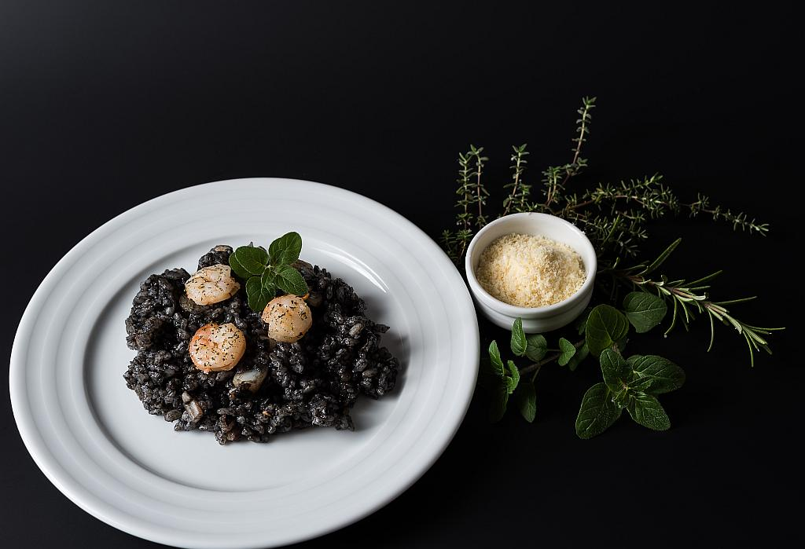

BLACK RISOTTO

INGREDIENTS
- 1 onion, finely chopped
- 2 cloves of garlic, minced
- 1 1/2 cups of Arborio rice
- 1 cup of dry white wine
- 4 cups of fish or vegetable broth
- 1 tablespoon of squid ink
- 1/4 cup of grated Parmesan cheese
- 2 tablespoons of butter
- Salt and pepper to taste
INSTRUCTIONS
- In a large saucepan, sauté the onion and garlic in butter until the onion is translucent.
- Add the Arborio rice and stir until it is coated with the butter and onion mixture.
- Stir in the white wine and cook until it has been absorbed by the rice.
- Add the fish or vegetable broth, one cup at a time, stirring constantly and waiting until each cup
has been absorbed before adding the next.
- Stir in the squid ink and continue cooking until the rice is al dente and most of the liquid has been absorbed.
- Remove from heat and stir in the Parmesan cheese until it is melted and fully incorporated.
- Season with salt and pepper to taste.
- Let the risotto rest for a few minutes before serving to allow it to thicken slightly.
- Garnish with chopped parsley or grated Parmesan cheese, if desired.